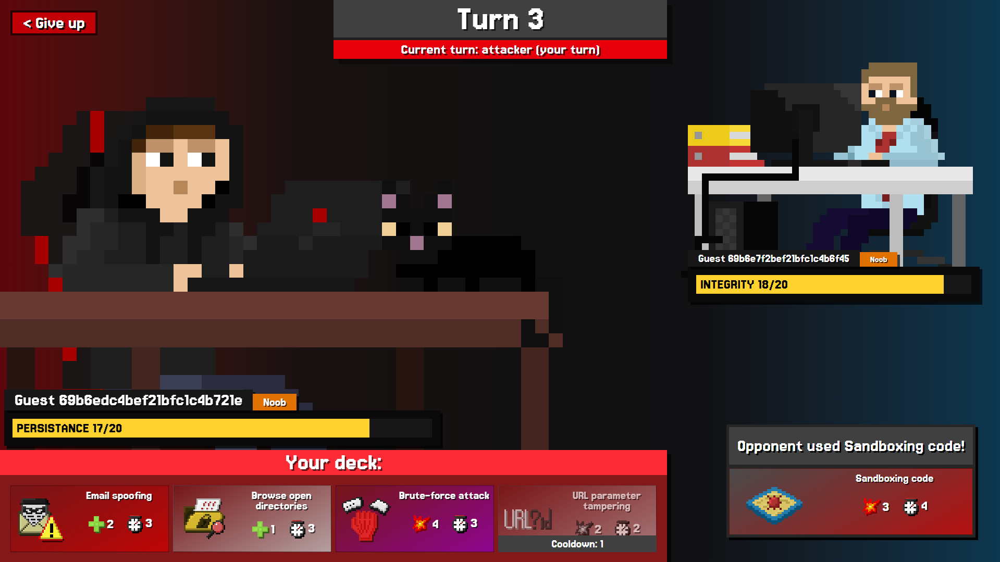

Poradnik użytkownika
Wprowadzenie
Opis gry
Firewall to przeglądarkowa gra wieloosobowa oparta o system turowy, inspirowana zagadnieniami z cyberbezpieczeństwa. W trakcie meczu gracz wybiera jedną z dwóch ról: hakera lub specjalistę ds. cyberbezpieczeństwa. Każda rola ma własne umiejętności oraz styl rozgrywki.
Najważniejsze funkcje
Gra oferuje między innymi:
- Szybkie mecze do krótkich sesji
- Mecze rankingowe dla graczy nastawionych na rywalizację
- System rankingu śledzący postępy gracza
- Walki PvP przeciwko innym graczom
- System poziomów postaci
- Oddzielne drzewka umiejętności dla obu ról
Wymagania
Do uruchomienia gry potrzebujesz:
- Nowoczesnej przeglądarki internetowej
- Aktywnego połączenia z internetem
- Rozdzielczości 1920×1080 (zalecane)
Jak dołączyć do gry
Możesz rozpocząć grę na dwa sposoby:
Gra jako gość
Możesz rozpocząć grę bez zakładania konta, wybierając opcję "Continue as Guest". Pozwala to przetestować wszystkie podstawowe mechaniki rozgrywki. Należy jednak pamiętać, że postępy będą zachowane tylko tak długo, jak trwa Twoja sesja w przeglądarce.
Ta opcja jest polecana osobom, które chcą najpierw sprawdzić grę, zanim utworzą konto.
Gra jako zarejestrowany użytkownik
Założenie konta pozwala zapisywać postępy. Aby się zarejestrować, podaj nazwę użytkownika, adres e-mail oraz hasło.
Interfejs użytkownika
Ta sekcja przedstawia ogólny wygląd interfejsu. Poniższe zrzuty ekranu pokazują interfejs roli hakera. Interfejs specjalisty ds. cyberbezpieczeństwa jest bardzo podobny.
 Ekran powitalny – formularz logowania
Ekran powitalny – formularz logowania
Ten ekran pojawia się po uruchomieniu gry. W tym miejscu możesz się zalogować, utworzyć nowe konto lub wybrać "Continue as Guest", aby grać bez rejestracji.
 Ekran lobby
Ekran lobby
Lobby jest głównym centrum gry, w którym możesz:
- Wybrać rolę, którą chcesz grać
- Zarządzać umiejętnościami
- Wybrać talię dla każdej roli
- Sprawdzić swój ranking (wyświetlany pod obrazem postaci)
- Sprawdzić swój poziom (wyświetlany pod rankingiem i nazwą użytkownika)
- Rozpocząć szybki mecz lub mecz rankingowy
- Otworzyć drzewko umiejętności (przycisk w lewym górnym rogu)
Aby dołączyć do meczu rankingowego, musisz wcześniej skonfigurować talię.
Wylogowanie jest dostępne w menu OPTIONS.
 Ekran drzewka umiejętności
Ekran drzewka umiejętności
Drzewko umiejętności pozwala odblokowywać nowe umiejętności za punkty umiejętności zdobywane wraz z awansem na kolejne poziomy.
Umiejętności są ułożone w siatce składającej się z czterech kolumn (kategorie) oraz sześciu wierszy (poziomy / tier).
Aby odblokować umiejętność, kliknij wybraną umiejętność i potwierdź zakup. Jeśli masz wystarczającą liczbę punktów umiejętności, umiejętność zostanie odblokowana.
- Niedostępne umiejętności są całkowicie wyszarzone.
- Dostępne, ale niekupione umiejętności są lekko wyszarzone.
- Odblokowane umiejętności są oznaczone obramowaniem.
Kliknij tutaj, aby dowiedzieć się więcej o umiejętnościach.

Ekran walkiEkran walki to miejsce, w którym rozgrywane są mecze.
- Wybrane umiejętności są wyświetlane na dole ekranu w Twojej talii.
- Każda umiejętność ma czas odnowienia po użyciu.
- Odnowienie jest pokazane jako szary pasek na kafelku umiejętności.
- Twoja postać znajduje się po lewej stronie ekranu, a przeciwnik po prawej.
- Paski życia, nazwy użytkowników i rankingi są wyświetlane pod postaciami.
- Aktualny numer tury oraz aktywny gracz są pokazane u góry na środku.
- Przycisk Give Up w lewym górnym rogu pozwala poddać mecz.
- Ostatnio użyta umiejętność przeciwnika jest pokazywana w prawym dolnym rogu.
Kliknij tutaj, aby dowiedzieć się więcej o mechanice gry.
 Ekran końcowy
Ekran końcowy
Ten ekran pojawia się po zakończeniu meczu i pokazuje podsumowanie, w tym:
- Czy wygrałeś/aś czy przegrałeś/aś.
- Łączny czas trwania meczu.
- Liczbę rozegranych tur.
- Zdobyte punkty doświadczenia (XP).
- Zdobyte punkty umiejętności.
Aby wrócić do lobby, kliknij "Back to Lobby".
Mechanika gry
Cel gry
Celem gry jest pokonanie przeciwnika poprzez zredukowanie jego punktów życia do zera.
Walka
Każdy gracz rozpoczyna mecz z 20 punktami życia. Dla roli hakera punkty te nazywają się PERSISTENCE, a dla roli specjalisty ds. cyberbezpieczeństwa — INTEGRITY.
Mecz zawsze rozpoczyna rola atakująca — haker.
Gracze wykonują akcje na zmianę, używając umiejętności z wcześniej wybranej talii.
Mecz kończy się, gdy zdrowie jednego z graczy spadnie do zera lub gdy jeden z graczy się podda.
Tryby gry
Wszystkie tryby gry mają ten sam cel i system walki. Różnią się jedynie sposobem budowania talii oraz tym, czy mecz wpływa na ranking gracza.
Szybki mecz (nierankingowy)
W tym trybie gracze mogą szybko znaleźć przeciwnika i rozegrać mecz bez wpływu na ranking.
Talia jest tworzona w systemie draftu. Po zakończeniu dobierania przeciwnika gracz przechodzi do fazy draftu, w której kompletowana jest talia.
Draft składa się z czterech rund. W każdej rundzie prezentowane są dwie losowe umiejętności, a gracz musi wybrać jedną z nich.
Gracz nie wie, jakie umiejętności pojawią się w kolejnych rundach, dlatego każdy wybór jest podejmowany bez znajomości przyszłych opcji.
W tym trybie wszystkie umiejętności mogą pojawić się podczas draftu — również te, których gracz jeszcze nie odblokował w drzewku umiejętności.
Szybki mecz jest dobry do eksperymentowania z różnymi umiejętnościami, testowania strategii i nauki mechanik.
Mecz rankingowy
W tym trybie gracze rywalizują, zdobywają doświadczenie i poprawiają swój ranking.
Gracze wchodzą do meczu z talią skonfigurowaną wcześniej w lobby.
Talia składa się z czterech umiejętności wybranych spośród tych, które gracz odblokował w drzewku umiejętności.
Umiejętności
Umiejętności to akcje, które Twoja postać może wykonać podczas walki.
W grze występują trzy typy efektów umiejętności:
- Damage – Umiejętności zadające obrażenia przeciwnikowi i zmniejszające jego punkty życia.
- Healing
 – Umiejętności przywracające punkty życia.
– Umiejętności przywracające punkty życia. - Freeze – Umiejętności blokujące przeciwnika na określoną liczbę tur.
Typ efektu jest oznaczony ikoną przypisaną do umiejętności.
Każda umiejętność ma również czas odnowienia  po użyciu.
po użyciu.
Nadpisanie leczenia
Jeśli umiejętność lecząca zostanie użyta, gdy zdrowie gracza jest już na maksymalnym poziomie, zamiast tego zostanie zastosowany specjalny efekt.
Efekt zależy od roli gracza.
- Dla roli HACKER leczenie przyznaje wzmocnienie obrażeń dla następnej umiejętności zadającej obrażenia.
- Dla roli CYBERSECURITY SPECIALIST leczenie przyznaje dodatkowe punkty życia, dzięki czemu gracz może tymczasowo przekroczyć standardowy limit 20 punktów.
Drzewko umiejętności
Drzewko umiejętności pozwala odblokowywać nowe umiejętności.
Umiejętności są pogrupowane w kategorie i poziomy (tier), które określają ich dostępność oraz progres w drzewku.
Aby odblokować umiejętność, musisz wydać punkty umiejętności zdobyte podczas zdobywania kolejnych poziomów.
Aby odblokować nowe umiejętności, muszą być spełnione następujące warunki:
- Gracz musi mieć wystarczającą liczbę dostępnych punktów umiejętności.
- Gracz musi odblokować poprzedni poziom umiejętności w tej samej kategorii.
- Jeśli w poprzednim poziomie wybranej kategorii nie ma dostępnej umiejętności, gracz musi najpierw odblokować umiejętność z tego poziomu w innej kategorii.
System rang
System rang ma na celu odzwierciedlenie postępów gracza w grze. Gracze awansują na kolejne rangi wraz z zdobywaniem nowych poziomów.
Istnieje 6 rang w grze.
- Noob: 0-4 poziom
- Beginner: 5-9 poziom
- Adept: 10-19 poziom
- Intermediate: 20-34 poziom
- Advanced: 35-49 poziom
- Expert: 50+ poziom